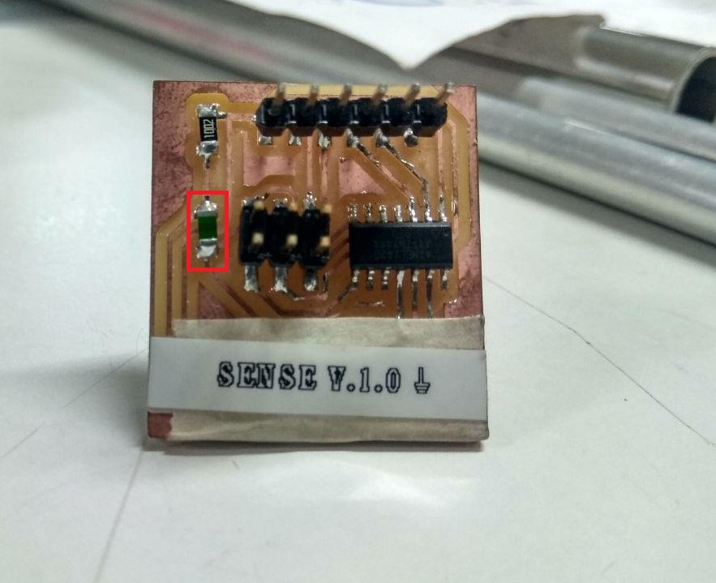
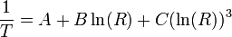
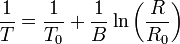
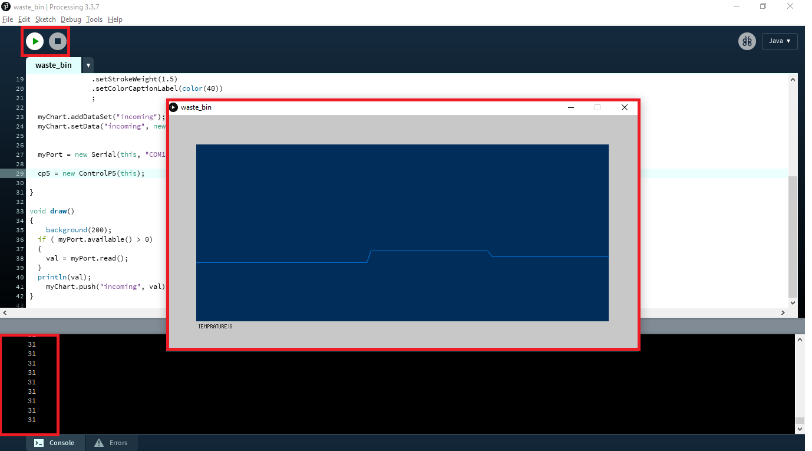

- write an application that interfaces with an input &/or output device that i made
- compare as many tool options as possible.
Introduction
In this week we need to develop an Application that interface our Input or Output devices, .professor neil gave us a introduction for building interface application and also communication protocols.
MIT App inventor

App Inventor for Android is an open-source web application originally provided by Google, and now maintained by the Massachusetts Institute of Technology (MIT).App Inventor lets you develop applications for Android phones using a web browser and either a connected phone or emulator.
How it work..?
App inventor have two part
- The App Inventor Designer, where you select the components for your app.
- The App Inventor Blocks Editor, where you assemble program blocks that specify how the components should behave. You assemble programs visually, fitting pieces together like pieces of a puzzle.
Here we are going to control LED light by using our phone , for this we need an Application so we are using MIT App inventor.
Application Development
- UI Design
- Programming
- Bluetooth selection
- Button Activity
The App Inventor Components are located on the left hand side of the Designer Window under the title Palette. Components are the basic elements you use to make apps on the Android phone. They're like the ingredients in a recipe. Some components are very simple, like a Label component, which just shows text on the screen, or a Button component that you tap to initiate an action.
I added two Buttons For Turn ON and OFF the LED , and One Listpicker for selecting the bluetooth device.also we need to add the Bluetooth Clinet it avilable under the Connectivity tab.

Here is how i designed my Application User Interface.you can see the components list that i used in the app.
Actually we don't need any coding to do our app , we just need to arrange some blocks in a order .
here we have main two code blocks,
we are using ListPicker for the bluetooth selection.
ListPicker have two state , one is BeforePicking state,in here we are loading bluetooth names in the list, second is AfterPicking here we are connecting the Bluetooth device that loaded on the ListPicker BeforePicking state , and also we are changing the text of the ListPicker in to Connected when we establish a bluetooth connection.
we are using two buttons for contorling LED state.
when we click a button bluetooth will transmit a text to device that connectedw with phone(we alredy connected a bluetooth device using ListPicker Bluetooth Selection). here if we press the Button2 it will transmit letter 'A' and if we press the Button3 it will transmit letter 'B' ,that's all.
Hardware Development
For the project i,am using re-designed Echo-Hello board that we designed in Electronics Production week , beacuse it have in-built LED and UART Port.
for bluetooth communication we are using HC-05 module.
It's an easy to use Bluetooth SPP (Serial Port Protocol) module,designed for transparent wireless serial connection setup.he HC-05 Bluetooth Module can be used in a Master or Slave configuration.This serial port bluetooth module is fully qualified Bluetooth V2.0+EDR (Enhanced Data Rate) 3Mbps Modulation with complete 2.4GHz radio transceiver and baseband. It uses CSR Bluecore 04‐External single chip Rluetooth system with CMOS technology and with AFH (Adaptive Frequency Hopping Feature).datasheet :- https://www.gme.cz/data/attachments/dsh.772-148.1.pdf
Pin Description
The HC-05 Bluetooth Module has 6pins. They are as follows:
- ENABLE:
- Vcc:
- GND:
- TXD & RXD:
- STATE:
- BUTTON SWITCH:
When enable is pulled LOW, the module is disabled which means the module will not turn on and it fails to communicate.When enable is left open or connected to 3.3V, the module is enabled i.e the module remains on and communication also takes place.
Supply Voltage 3.3V to 5V
Ground Pin
These two pins acts as an UART interface for communication
It acts as a status indicator.When the module is not connected to / paired with any other bluetooth device,signal goes Low.At this low state,the led flashes continuously which denotes that the module is not paired with other device.When this module is connected to/paired with any other bluetooth device,the signal goes High.At this high state,the led blinks with a constant delay say for example 2s delay which indicates that the module is paired.
This is used to switch the module into AT command mode.To enable AT command mode,press the button switch for a second.With the help of AT commands,the user can change the parameters of this module but only when the module is not paired with any other BT device.If the module is connected to any other bluetooth device, it starts to communicate with that device and fails to work in AT command mode.
Hardware Features
- Typical ‐80dBm sensitivity.
- Up to +4dBm RF transmit power.
- 3.3 to 5 V I/O.
- PIO(Programmable Input/Output) control.
- UART interface with programmable baud rate.
- With integrated antenna.
- With edge connector.
Software Features
- Slave default Baud rate: 9600, Data bits:8, Stop bit:1,Parity:No parity.
- Auto‐connect to the last device on power as default.
- Permit pairing device to connect as default.
- Auto‐pairing PINCODE:”1234” as default.
Schematic Diagram

here we are connecting blutooth VCC connect 5v , GNDconnect GND , RXD connect TX becasue The transmitter should be talking to the receiver, not to another transmitter , so the TXD connect RX .
Programming
Here are we are using Arduino IDE , Arduino Bootloader to upload progarmme.we alredy burned bootloader so no need to do again also we use Fab-ISP as usbTinyISP progarmmer.
Code
/*
Author :- Salman Faris
Purpose :- ATtiny44 HC-05 Bluetooth Module Interface
Date :- 23/03/2108
*/
#include<SoftwareSerial.h>
#define Rx 0
#define Tx 1
SoftwareSerial myserial(Rx, Tx);
char data = 0; //Variable for storing received data
void setup()
{
myserial.begin(9600); //Sets the data rate in bits per second (baud) for serial data transmission
pinMode(A3, OUTPUT); //Sets digital pin A3 as output pin
}
void loop()
{
if (myserial.available() > 0) // Send data only when you receive data:
{
data = myserial.read(); //Read the incoming data and store it into variable data
if (data == 'A') //Checks whether value of data is equal to "A"
digitalWrite(A3, HIGH); //If value is "A" then LED turns ON
else if (data == 'B') //Checks whether value of data is equal to "B"
digitalWrite(A3, LOW); //If value is "B" then LED turns OFF
}
}
Bluetooth moulde is talking via Serial communication , but we don't have a Serial communication port in our ATtiny44 so we implimneted Software Serial.
Demonstration
For testing first we need to install applicaion on our mobile phone , .apk file can be download by clicking Build button on the top navigavtion panel.
Building Apk will take less than one minute time.
Download the .apk file and install it on your android phone.next upload bluetooth progarmme to your board and connect with bluetooth module.
Application Demo
Working Demo
Resource File
processing
Processing is an open-source computer programming language and integrated development environment (IDE) built for the electronic arts, new media art, and visual design communities with the purpose of teaching non-programmers the fundamentals of computer programming in a visual context. The Processing language builds on the Java language, but uses a simplified syntax and a graphics user interface.
In here i,am utilizing Termistor of my Sense board , and my plan is to make a Temprature Graph using the Processing .so i used controlP5 it's a GUI (graphical user interface) library for processing and it's very easy to use.and to get data from my board to Processing i used inbuilt serial library.
I used 10k Thermistor to measure the temprature and also added a Pull-up resistor .
Programming
I used arduino Serial to print out the temprature value.
/*
* Project :- ATtiny44 Temprature Sensor using 10k Thermistor
* Author :- Salman Faris
*
*/
#include <math.h>
#include <SoftwareSerial.h>
#define RX 9
#define TX 10
SoftwareSerial myserial(RX, TX);
void setup() {
myserial.begin(9600);
pinMode(PA0, INPUT);
}
double Thermister(int RawADC) { //Function to perform the fancy math of the Steinhart-Hart equation
double Temp;
Temp = log(((10240000 / RawADC) - 10000));
Temp = 1 / (0.001129148 + (0.000234125 + (0.0000000876741 * Temp * Temp )) * Temp );
Temp = Temp - 273.15;
return Temp;
}
void loop() {
int val;
int temp;
val = analogRead(PA0);
temp = Thermister(val);
myserial.write(temp);
delay(500);
}
we want to have the temperature reading, not just a resistance , so i used Steinhart-Hart equation to get the temperature value.actually we need to calibrate the temprature sensor in-order to get the right value, i used the genral coefficients for this .
this equation is fairly complex and i used the simplified B parameter equation.(source:- https://en.wikipedia.org/wiki/Thermistor.
and is used arduino Serial.write function insted of Serial.println beacause i can't read the data from the other side using the Print beacuse it's send ASCII charactersso we can read easily but for passing the value to processing we need to make it bytes so that's why i used Serial.write .
Processing Code
import processing.serial.*;
import controlP5.*;
Serial myPort;
int val;
ControlP5 cp5; //
Chart myChart;
void setup()
{
size(800, 400);
cp5 = new ControlP5(this);
myChart = cp5.addChart("Temprature is ")
.setPosition(50, 50)
.setSize(700, 300)
.setRange(20, 50)
.setView(Chart.LINE)
.setStrokeWeight(1.5)
.setColorCaptionLabel(color(40))
;
myChart.addDataSet("incoming");
myChart.setData("incoming", new float[100]);
myPort = new Serial(this, "COM10", 9600);
cp5 = new ControlP5(this);
}
void draw()
{
background(200);
if ( myPort.available() > 0)
{
val = myPort.read();
}
println(val);
myChart.push("incoming", val);
}
Demo
Video